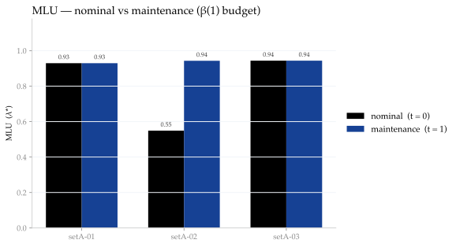
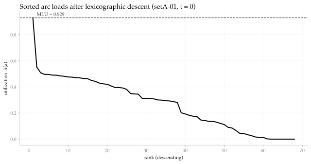

Our solution to the
T-ASR Problem
KAPT — Mathematical Programming with Julia
Orange Research — EURO/ROADEF 2026 · Keep the Flow!
OTH Regensburg · Faculty of Computer Science and Mathematics
Optimize a changing network,
on a budget
- •Optimize traffic over a telecom network.
- •Traffic is controlled by the routers.
- •Our option to intervene: waypoints the traffic has to pass.
- •Goal: optimal load distribution.

Two notebooks, shared modules
- Split into two phases Phase t0: steps 1-5 Phase t1: steps 6-8
- Shared code lives in source
Build the graph G₀
- Graph module reads the net JSON into the graph G.
- Built on the given reference implementation.
Compute the split coefficients r
- SplitCoefficients module returns the split coefficients r as a dict.
- r covers the shortest paths only.
Derive the model parameters
- TrafficMatrix module parses the demand volumes from the tm JSON.
- Scenario module parses maxSeg from the scenario JSON.
Implement the model for t = 0
- Model module builds and solves the MILP.
- Builder pattern, reused by both notebooks.
- One builder function per constraint.
One binary per segment
One path per demand
Guarantees path continuity from source s to target t.
At most maxSeg segments
Physical hardware limit on router packet headers.
Routed flow ≤ capacity × MLU
Maps segment routing to real physical cables using ECMP coefficients r(i,j,a).
Minimize the MLU, then flatten the loads
Core Objective (Eq. 5): minimize the maximum link utilization $\text{MLU} = \lambda_{\max}$.
- •The Problem: minimizing only $\lambda_{\max}$ leaves other links unoptimized and close to saturation.
- •Level 1: solve for the absolute MLU $\lambda^{*}$.
- •Deeper levels $k \ge 2$: freeze the previous load and minimize the sum of the $k$ most loaded links $S_k$.
- •Key detail: continuous slacks $d(a)$ and threshold $t_k$ ⟹ zero extra binary variables.
Optimal on small, feasible on 04–05

| Instance | V | D | Status | MLU | Gap |
|---|---|---|---|---|---|
| setA-01 | 20 | 40 | optimal | 0.93 | 0% |
| setA-02 | 30 | 45 | optimal | 0.55 | 0% |
| setA-03 | 50 | 20 | optimal | 0.94 | 0% |
| setA-04 | 50 | 200 | feasible | 0.48 | 34% |
| setA-05 | 100 | 100 | feasible | 0.12 | 22% |
setA-06+ still hit TIME_LIMIT.
The TIME_LIMIT wall

Plan for maintenance scenarios
- •Over time period t1 some arcs get deactivated.
- •Traffic needs to be rerouted.
- •Rerouting has costs and risks.
- •Balance optimality for time and rerouting.
Extend the modules for t = 1
- Scenario module gains two functions Parse the downtime links q(1) Parse the reconfiguration budget
- Graph module gains one function Build the degraded graph G₁
The budget constraint
Maintenance (t = 1): links go down ⟹ network needs rerouting.
Operational cost: reconfiguring routers costs effort and risks QoS.
Limits waypoint changes between t = 0 and t = 1. Implementation: $|x^{d,1} - x^{d,0}|$ linearized via segmentChange.
Rerouting under budget

| Instance | β(1) | down | MLU t0 | MLU t1 |
|---|---|---|---|---|
| setA-01 | 51 | 22 | 0.93 | 0.93 |
| setA-02 | 63 | 59 | 0.55 | 0.94 |
| setA-03 | 53 | 52 | 0.94 | 0.94 |
setA-01 absorbs the failure for free; setA-02 degrades from 0.55 to 0.94.
Sorted arc loads after the descent

The exact approach doesn't scale
- •The exact MILP only closes the small instances — 01–03 optimal, 04–05 feasible (34% / 22% gap), 06+ hit the limit.
- •Root cause: ~|D|·|V|² binaries (up to 22.4M) — branch-and-bound can't scale.
- •The parallel overnight runs crashed — t0 finished only 2 of 10, t1 aborted (core dumped).
- •Cause: all 10 instances were launched at once with no RAM gating.
Limitations as-is
- •Multigraph detour — 10 instances flagged “multigraph” were assumed unsolvable, but all 20 are actually simple graphs.
- •Incomplete t1 sweep — only setA-01/02/03 ran before the crash.
- •No feasible points on the large instances.
- •Docs drifted from the code (scheduler names, the “out of scope” claim).
Feedback
setA is too large for a 2-week course.
- •Binaries grow as $n^2$ — $B = |D|\,n\,(n-1)$ → setA-10 has 22 M binaries in one period.
- •RAM: setA-10 needs ~45 GB just to store the model.
- •Runtime scales ~$B^{1.85}$ (10× size ≈ 70× time): setA-06 ~2 days, setA-10 ~40 days.
- •Only setA-01/02/03 solved to optimality (4–17 s); setA-04+ hit the limit.
Takeaway: need smaller instances or a reduced formulation (fewer candidate waypoints, since $B \propto n^2\,|D|$).